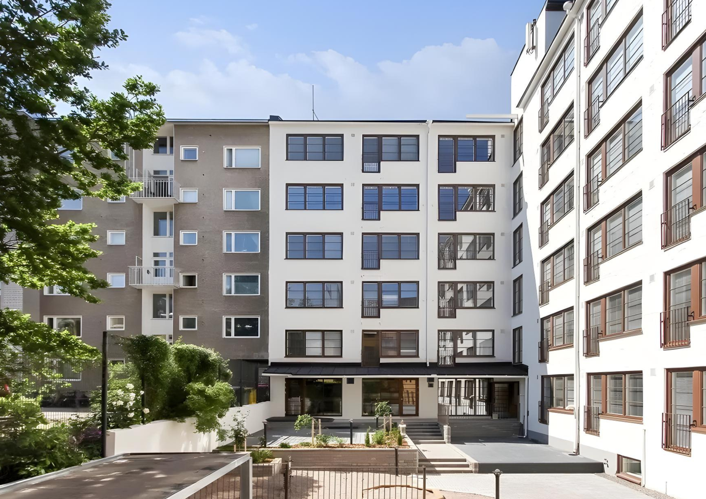

Галерея
Фотографии наших работ



Водосточные системы и безопасность кровли
Монтируем и заменяем водосточные системы, а также элементы безопасности кровли. Эти работы защищают здание и повышают безопасность.
Исправная водосточная система отводит воду с крыши и защищает конструкции. Монтируем и заменяем желоба, водосточные трубы и отливы.
Устанавливаем элементы безопасности кровли: снегозадержатели, кровельные лестницы, мостики и другие защитные конструкции, которые повышают безопасность и облегчают обслуживание кровли.

Прочные профессиональные навыки и годы опыта в кровельных и жестяных работах.
Выполняем работы тщательно и аккуратно, вплоть до финишной отделки.
Соблюдаем договорённости и согласованные сроки.
Обслуживаем на финском, русском и английском языках.